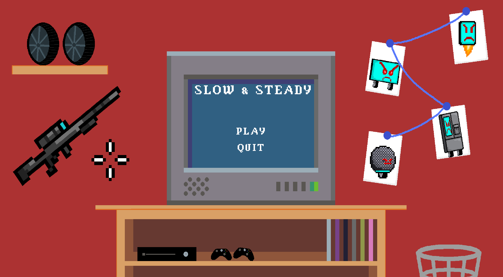
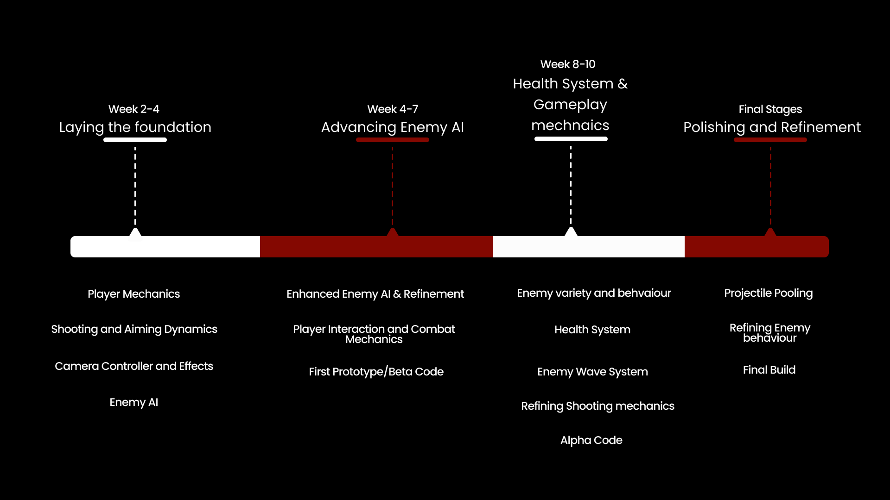

A horde-based twin-stick shooter built around a slow-motion mechanic tied to hit accuracy, five enemy archetypes, and a multi-phase boss.
January — April 2024
Slow and Steady was built for IAT 410, SFU's senior game development capstone. The brief was open-ended: build a complete 2D game from scratch as a four-person team. We picked a horde-based twin-stick shooter, which gave us room to focus on combat feel and enemy variety.
The core loop centers on precision aiming, a slow-motion mechanic tied to hit accuracy, and escalating enemy waves that force the player to adapt strategy as encounters scale. Five enemy archetypes plus a multi-phase boss give the later waves distinct tactical problems instead of just higher numbers.
Core Gameplay Mechanics and Responsive Design: Built the core movement and aiming systems: WASD/arrow-key movement decoupled from mouse-driven aim direction, so the player can strafe and shoot independently — the foundation every other combat system in the game builds on.
Enhanced Shooting Dynamics: Implemented hitscan-style shooting with physics-based collision detection and bullet tracers, giving immediate visual confirmation on every shot without waiting on projectile travel time.
Health Systems and Progressive Challenges: Built a shared enemy health system that scales across archetypes without per-enemy special-casing, plus a wave spawner that ramps difficulty and enemy composition over time rather than just raw enemy count.
Enemy Advanced AI and Tactical Depth: Added new enemy AI archetypes with distinct behaviors on top of the shared health/state system, and a reload-bar UI element that turns weapon cooldown into a visible pacing decision instead of a hidden timer.

Development started with the core movement and aiming loop, then layered in enemy AI with A* pathfinding, a health/damage system shared across enemy types, and a wave spawner to structure encounters. The slow-motion mechanic and its accuracy-based recharge came later, once the base combat loop was solid enough to build a skill-expression system on top of. Final weeks went into performance work (projectile pooling) and the Cybertruck boss fight, a multi-phase encounter built to stress-test every system built up to that point. Art, UI, and audio were built in parallel by the rest of the team.
The biggest technical lesson was keeping combat systems modular enough that a late addition — the slow-motion mechanic — could plug into player movement, camera, and enemy AI without a rewrite of any of them. That meant designing the original systems with hooks for time-scale changes from the start, before slow-motion was even a confirmed feature. Debugging combat feel was mostly about instrumentation: the hit-marker and kill-confirmation audio came directly out of watching playtesters and noticing they couldn't tell when a shot had landed without it.